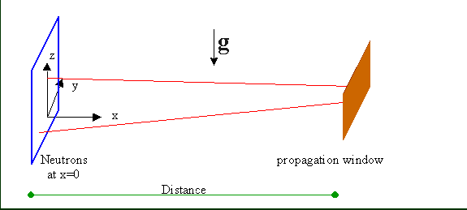

There are 4 modules that can be used for propagation of the neutrons to a certain area: Space, Slit, Spacewindow and Spacewindow_multiple.
They all take into account gravity (if this option is chosen).
Space propagates the neutrons over a certain distance and takes into account attenuation (in air).
Slit propagates the neutrons over a certain distance to a rectangular window centered around the beam axis.
Spacewindow propagates the neutrons over a certain distance to a rectangular or circular window whose center might be out of the center of the beamline.
It can consider attenuation inside the window and non-perfect absorption outside the window and can also be used as a beamstóp.
Additionally, it has some filter options.
Spacewindow_multiple works like Spacewindow, but can treat up to 100 rectangular or circular window in any geometry.
It is described in spacewindow_multiple.html
Their x-coordinates are reset to 0 (as in most others modules) after finishing the propagation.

The module space simply simulates the propagation over a certain distance. An attenuation inside the medium can be considered by giving the macrosopic absorption and total scattering cross-section. The macroscopic cross-section can be calculated from the microscopic cross-section by multipyling with the particle density.
The module spacewindow simulates free propagation of neutrons (from x=0) to a rectangular or circular window.
The (rectangular) window can be rotated about the x-axis.
There is the possibility to let only neutrons of a certain range in flight direction and a certain color pass.
The window may have a thickness, an inner and/or an outer material.
In case of ideal transmission inside and ideal absorption outside, only those hitting the window are considered further on.
Otherwise, attenuation is calculated for neutrons passing inside (inner material) or outside (outer material).
There is also the possibility to simulate a beamstop by defining a negative window, where neutrons pass outside and are absorbed inside.
But it is a better choice to use the module beamstop for that.
To simulate beamstops and windows between sample and detector, the option 'use previous frame' has been included.
It prevents the usual shift of the origin to the center of the window, thus leaving the origin in the center of the sample,
which is necessary for a proper working of the detector module.
Two kinds of material can be chosen. Outer material denotes the material of the window frame absorbing neutrons outside the window.
Inner material denotes the material of the window pane (if any) through which the neutrons have to pass.
For each material used, the thickness has to be given.
Setting the thickness of the material to zero means ideal absorption for the outer and ideal transmission for the inner material.
For both kinds of materials, a file describing the absorption can be given (see below).
If the file is given, the treatment of transmission is activated, otherwise the ideal transmission/absorption is assumed.
For the window frame, there is also the option to choose from a number of absorbing materials.
The file format describing the transmission is:
First column : wavelength [Å] Second column: attenuation [1/cm]For the outer materials, the following options exist
Value 0 - data from file (created by user) Value 1 - Gadolinium. Value 2 - Cadmium. Value 3 - Bor10. Value 4 - Europium Value 5 - Silicon. Value 6 - Ideal absorptionFor materials 1 - 4, the maximal wavelength range is 0.3 ... 28 Å. For silicon, the maximal wavelength range is 1 .. 20 Å (Data from Thomas Krist, HZB, Berlin)
| Parameter Unit |
Description |
Range or Values |
Command Option |
| distance [m] |
distance from the origin (usually the exit of the previous component) to a plane vertical to the x-axis where the next component begins | >= 0 | -d |
| total scattering [1/cm] |
macroscopic total scattering cross-section | >= 0 | -M |
| absorption [1/cm] |
macroscopic absorption cross-section for 1.798 Ã The absorption cross-section for the wavelength under consideration is calculated in the module from this value. |
>= 0 | -m |
| Parameter Unit |
Description |
Range or Values |
Command Option |
| distance [m] |
the distance from the origin (usually the exit of the previous component) to the slit along the x-axis | >= 0 | -d |
| width [cm] |
width of the rectangular slit | >= 0 | -W |
| height [cm] |
height of the rectangular slit | >= 0 | -H |
| Parameter Unit |
Description |
Range or Values |
Command Option |
| distance orig. <-> win [cm] |
the distance from the origin (usually the exit of the previous component) to the center of the window. It is the projection of the vector from the origin to center of the window on the x-axis | >= 0 | -l |
| window shape |
shape of the window circular : circular window defined by its center (relative to beam axis) and radius rectangular: rectangular window defined by the distances from the 4 edges to the center of the beam axis |
circular, rectangular | -R |
| radius [cm] |
radius of the circular window | >= 0 | -r |
| center y center z [cm] |
horizontal (y) and vertical (z) position of the center of the window relative to the center of the beam axis | >= 0 | -y -z |
| min. y max. y [cm] |
right and left edge of the rectangular window relative to the center of the beam axis | >= 0 | -w -W |
| min. z max. z [cm] |
lower and upper vertical edge of the rectangular window relative to the center of the beam axis | >= 0 | -h -H |
| rot. angle [deg] |
rotation of the window about the (negative) x-axis 0 deg: height along the z-axis (upwards) 90 deg: height along the y-axis (to the left) |
[-180,180] deg | -A |
| used as beamstop |
yes: negative window: absorption inside and transmission outside no : normal window: transmission inside This option will be removed in VITESS 4. Please, use module beamstop instead. |
'no', 'yes' | -S |
| use previous frame |
yes: origin of the co-ordinate system remains unchanged no : x-ordinate is shifted to the center of the window (default) Prevention of the shift of the origin is necessary for beamstops and windows between sample and detector |
'no', 'yes' | -F |
| treat color | filter: Treat only events with given color. A negative number means any color | This option will be removed in VITESS 4. Please, use module filter instead.-1,0, 1 ... | -f |
| min. phi max. phi [deg] |
filter: minimal and maximal flight direction phi phi is the projection of the flight direction to the y-z-plane 0° negative z-axis, 90° negative y-axis, 180° positive z-axis, 270° positive y-axis, A negative value for minimum or maximum means that the whole range is allowed. |
This option will be removed in VITESS 4. Please, use module filter instead.
[0°,360°] | -p, -P |
| outer tranmsission file | File containing the wavelength dependent attenuation (see desription itn the text) inside the frame of the window | -C | |
| thickness of frame [cm] |
Thickness of the material used for the absorbing window frame | >= 0 | -t |
| frame material | Material used for the absorbing window frame | -c | |
| inner transmission file | File containing the wavelength dependent attenuation (see desription itn the text) inside the window pane | -m | |
| thickness of window [cm] |
Thickness of the material used for the window pane | >= 0 | -T |
Last modified: Tue May 8 17:08:06 MET DST 2001